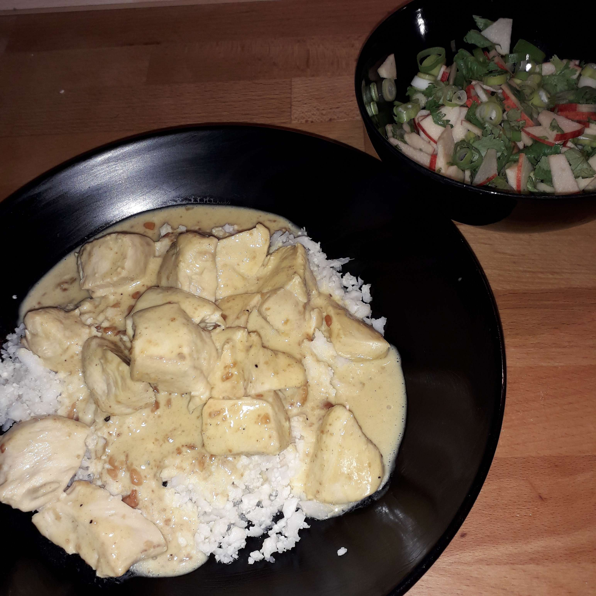

Zutaten für 4 Portionen
- 600 g Hähnchenbrustfilet
- 1-2 TL Currypaste
- 200 ml Kokosmilch
- 200 g Schlagsahne
- ½ Limette
- 2 EL Tamari (glutenfreie Sojasauce)
- 4 EL Erdnussbutter, cremig
- 1 handvoll Erdnüsse
- 1 Stängel Koriander
- 2 Frühlingszwiebeln
- ½ Apfel
- Salz & Pfeffer
- Butter oder Kokosöl zum Braten
Zubereitung
Die Hähnchenbrustfilets abspülen, abtrocknen und in Würfel schneiden. In einer Pfanne oder einem Topf in Butter oder Kokosöl gar braten.
Für die Sauce etwas Kokosöl in einer Pfanne erhitzen und die Currypaste hinzufügen, etwas anrösten. Die Limette entsaften und die Schale abreiben. Kokosmilch, Sahne, Limettensaft, Tamari und Erdnussbutter hinzufügen und umrühren, bis die Sauce eine gleichmäßige und cremige Konsistenz hat.
Die Hähnchenwürfel hinzufügen und alles etwas köcheln lassen. Mit Salz & Pfeffer abschmecken.
Den Koriander und die Frühlingszwiebeln feinhacken, den Apfel in feine Scheiben schneiden und alles zusammen mit dem Limettenabrieb und den Erdnüssen vermischen und beim Anrichten über das Gericht streuen.
Dazu passt Blumenkohlreis sehr gut.